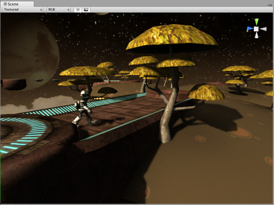
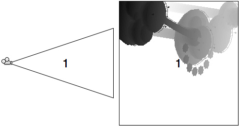
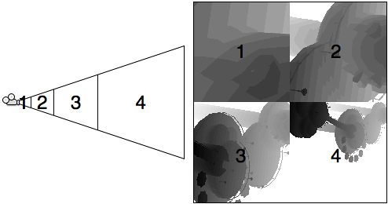
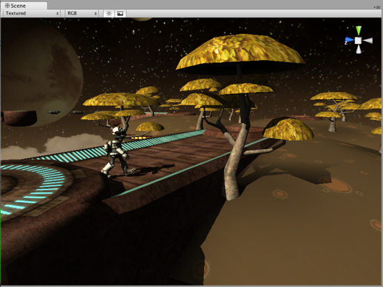

Directional Shadow Details
This page explains shadows from Directional lights in detail.
Note on Mobile platforms: realtime shadows for directional lights always use 1 shadow cascade, and are always "hard shadows".
Directional lights are mostly used as a key light - sunlight or moonlight - in an outdoor game. Viewing distances can be huge, especially in first and third person games, and shadows often require some tuning to get the best quality vs. performance balance for your situation.
Let's start out with a good looking shadow setup for a 3rd person game:

Shadows here look pretty good!
Shadows here look pretty good!
Here, visible distance is about 50 game units, so Shadow Distance was set to 50 in Quality Settings. Also, Shadow Cascades was set to 4, Shadow Resolution to High, and the light uses Soft Shadows.
Chapters below dissect each aspect of directional light shadows:
Hard versus Soft shadows
Using the same light setup, if we switch Shadow Type to Hard Shadows, then the transition from lit to shadowed regions is "hard" - either something is 100% in shadow, or 100% lit. Hard shadows are faster to render but often they look less realistic.

Hard shadows with distance of 50 and four cascades.
Shadow Cascade count
For Directional lights Unity can use so called Cascaded Shadow Maps (alternatively called "Parallel Split Shadow Maps") which give very good shadow quality, especially for long viewing distances. Cascaded shadows work by dividing viewing area into progressively larger portions and using the same size shadow map on each. The result is that objects close to the viewer get more shadow map pixels than objects far away.
In the images below we'll use Hard shadows because shadow pixels are better visible there.
If no cascaded shadow maps were used, the entire shadow distance (still 50 units in our case) must be covered by the shadow texture uniformly. Hard shadows would look like this with no cascades:

Hard shadows with distance of 50 and no cascades.
The pixels of the shadow texture are the same size everywhere, and while they look good in distance, the quality is not stellar up close. The shadow texture covers the entire viewing area, and if visualized it would look like this:

With no cascades, shadow texture covers viewing area uniformly.
With no cascades, shadow texture covers viewing area uniformly.
When two shadow cascades are used, the entire shadow distance is divided into a smaller chunk near the viewer and a larger chunk far away. Hard shadows would look like this with two cascades:

Hard shadows with distance of 50 and two cascades.
In exchange for some performance, we get better shadow resolution up close.

With two cascades, two shadow textures cover different sized portions of viewing area.
And finally when four shadow cascades are used, the shadow distance is divided into four progressively larger portions. Hard shadows would look like this with four cascades:

Hard shadows with distance of 50 and four cascades. Hey, we've seen this already!

With four cascades, four shadow textures cover different sized portions of viewing area.
With four cascades, four shadow textures cover different sized portions of viewing area.
Shadow Distance is Important!
Shadow Distance is extremely important for both quality and performance of directional light shadows. Just like shadow cascade count, shadow distance can be set in Quality Settings and allows an easy way to scale shadows down on less performant hardware.
Shadows fade out at the end of shadow distance, and further than that objects are not shadowed. In most situations shadows further than some distance in the game would not be noticeable anyway!
With no shadow cascades, hard shadows and shadow distance set to 20 units our shadows look like picture below. Note that shadows do fade out in the distance, but at the same time shadow quality is much better than it was with no cascades and a distance of 50 units.

Hard shadows with distance of 20 and no cascades.
If on the other hand we set shadow distance too high, shadows won't look good at all. Setting distance to 100 here only decreases both performance and quality and does not make much sense - no objects in the scene are further than about 50 meters anyway!

Hard shadows with distance of 100 and no cascades. Ouch!
Shadow maps with cascades scale with distance much better. For example, four cascade soft shadows with covering 300 units in front of the camera look like picture below. It's somewhat worse than the picture at the top of this page, but not very bad either for a 6x increase in shadowing distance (of course in this scene that high shadow distance does not make much sense).

Soft shadows with distance of 300 and four cascades.
Page last updated: 2012-11-16